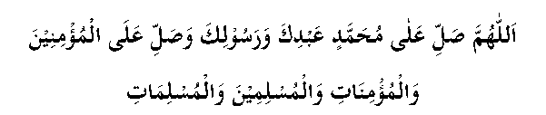

Hadhrat Abu Saeed Khudrī narrates that Rasulullah (sallallahu alayhi wasallam) said, "Whichever Muslim does not have anything to give in charity should say,

(O Allah, send blessings upon Muḥammad, your servant and your Messenger, and send blessings upon the believing men and the believing women, the Muslim men and Muslim women.)' This shall be a charity for this person." He also said, "The believer is never satisfied with good actions until he reaches Jannah."
Rasulullah (Sallallahu alayhi Wassalam) said, "Send durood upon me, for indeed sending durood upon me is like giving charity." In another ḥadīth, it is narrated, "Send durood upon me in abundance, for it is a charity for you." Furthermore, it has been narrated from Hadhrat Ali (RA) that Rasulullah (Sallallahu alayhi wassalam) said, "Your durood upon me is a source of protection for your duas, a means of pleasing your Allah Ta’ala and a charity for your deeds (i.e. a means to clean and increase them)."
Hadhrat Anas (RA) narrates that Rasulullah (Sallallahu alayhi Wassalam) said, "Send durood upon me, for your durood will wipe out your sins and are an act of charity." As for the last part of the ḥadīth (the believer does not become satisfied), the meaning is clear. A true believer is never content with his good deeds. He is always trying hard to perform any good deed in whichever way. Thus, if he does not have any money to give in charity, he will earn the rewards of charity by sending durood upon Rasulullah (Sallallahu alayhi wassalam).